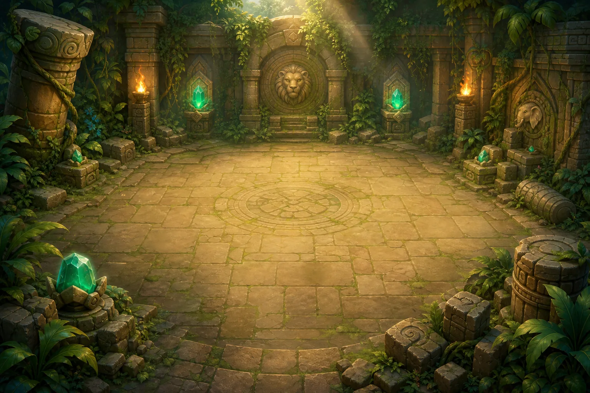

In Animal Relic Hunters, the weapon aims and fires automatically. That sounds like less to do. In practice, it leaves room for the decision that matters most: where to stand next.

Movement is the main action. You steer around enemies, cross behind ranged attackers, reverse when a charge is coming, and avoid standing inside the next danger zone.
Automatic fire is not automatic play
We wanted the controls to stay focused, especially on a phone. A virtual joystick handles movement while the relic weapon chooses the nearest target. On desktop, keyboard and held mouse input offer the same basic decision.
The trade-off is deliberate. The player gives up manual aiming, but gains more attention for spacing and threat reading. If a shooter is outside weapon range, the answer is not usually “press attack harder.” It is to move into a better line, then leave before the next projectile arrives.
Every enemy asks for a different route
A charging enemy rewards early movement. A ranged enemy makes the outside lane dangerous. A pulser asks you to read the expanding ring. A splitter changes the room after it falls. Wards, regeneration, slow, and silence each interrupt a different comfortable habit.
That variety is important. If every threat can be solved by circling in one direction, auto-fire becomes a screensaver. The room needs to ask the player to change direction for a reason.
The run is a series of small bets
Each expedition has three connected rooms. Earlier rooms offer Relic Orbs and equipment choices, but damage and health also carry forward. A powerful upgrade may help now; a defensive one may be the reason the final room is still possible.
That makes the run feel less like collecting every reward and more like deciding what kind of explorer this attempt needs to become. The temporary build resets on a new expedition, while gear and training give the longer campaign a sense of memory.
What we keep checking
An auto-attack game should still make the player feel responsible for the outcome. We keep asking:
- Does the player have a meaningful movement decision every few seconds?
- Does each enemy pattern require a different response?
- Can a phone player control distance without fighting the interface?
If the weapon does the interesting part and the player only watches, the design has gone too far. In Animal Relic Hunters, the shot is automatic. The escape route is yours. 🦁
Play Animal Relic Hunters now →
This article was outlined with AI assistance and then checked and edited against the actual WeightPlay project by the WeightStudio team.